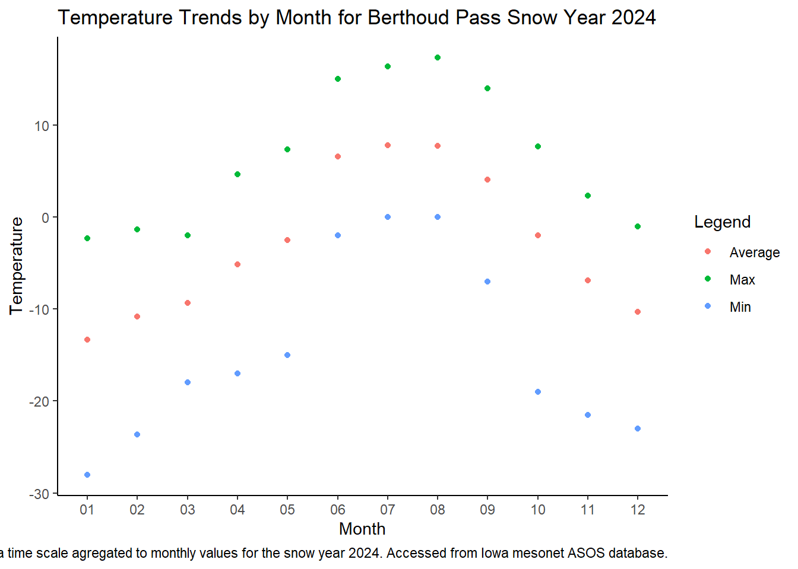
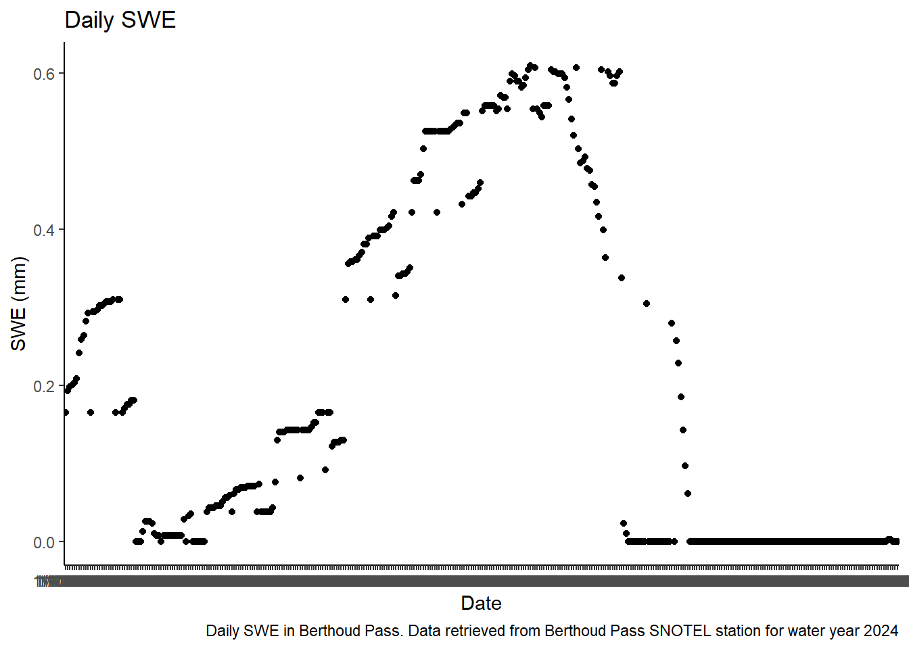
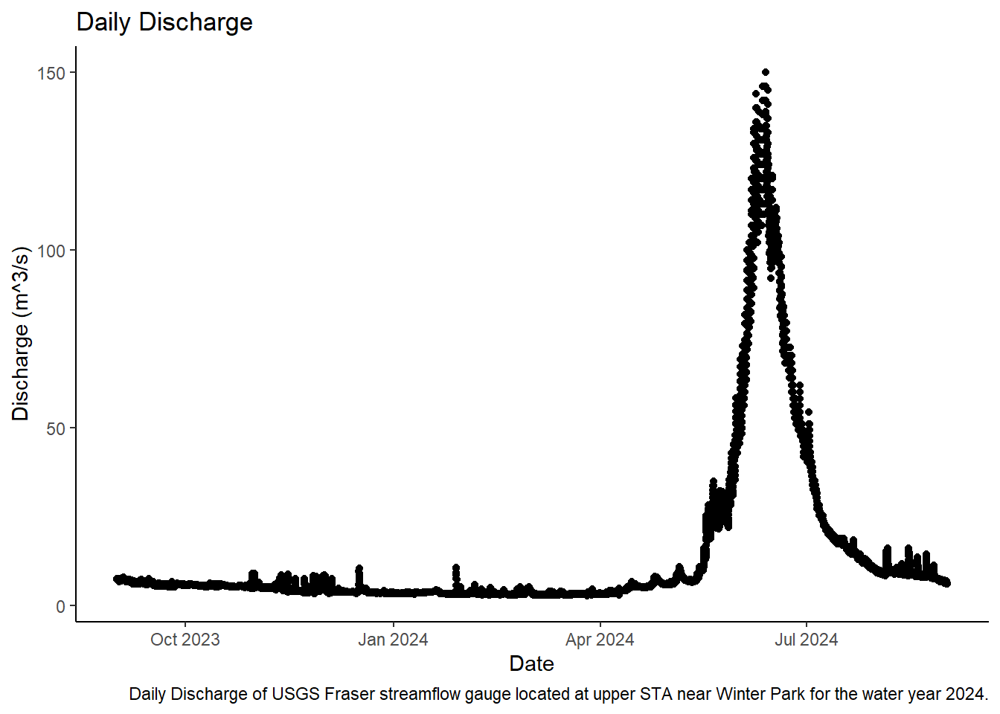

Chapter 1 Assignment 2: Data Vizualization
##Data Cleaning
##load data into R
library(tidyverse)
library(dataRetrieval)
asos <- read.csv("Data/asos_berthoud.csv")
asos_clean <- asos %>%
mutate(valid = mdy_hm(valid),
Date = as_date(valid),
Time = format(valid, "%H:%M"),
Hour = format(valid, "%Y/%m/%d %H"),
tmpc = (tmpf - 32) * (5/9),
dwpc = (dwpf - 32) * (5/9),
sms = sknt *.514444,
p01mm = p01i * 25.4,
altmb = alti * 33.8637526 * .8279,
gustms = gust * .514444) %>%
select(!skyc2:snowdepth)
asos_hourly <- asos_clean %>%
group_by(Hour) %>%
mutate(p01mm = sum(p01mm),
tmpc = mean(tmpc),
dwpc = mean(dwpc),
sms = mean(sms),
p01mm = sum(p01mm),
altmb = mean(altmb),
gustms = max(gustms)) %>%
filter(grepl(":55", valid))
write.csv(file = "Data/asosclean.csv", asos_hourly)
SNOTEL <- read.csv("Data/SNOTEL_Berthoud.csv")
q_USGS <- readNWISuv(siteNumbers = "09022000",
startDate = "2023-09-01",
endDate = "2024-08-31",
parameterCd = "00060",
tz = "America/Denver") %>%
distinct()%>%
mutate(DT_mst = with_tz(dateTime, tzone = "MST"),
source = "USGS") %>%
select(dateTime, q_cfs = X_00060_00000)## GET: https://nwis.waterservices.usgs.gov/nwis/iv/?site=09022000&format=waterml,1.1&ParameterCd=00060&startDT=2023-09-01&endDT=2024-08-31##Data Exploration
p_month <- asos_hourly %>%
select(Date, p01mm) %>%
mutate(month = format(as.Date(Date, format="%m/%d/%y"), "%m")) %>%
group_by(month) %>%
summarize(total_p_mm = sum(p01mm, na.rm = TRUE))## Adding missing grouping variables: `Hour`ggplot(p_month, mapping = aes(x = month, y = total_p_mm))+
geom_point(color = "steelblue4", size = 5)+
xlab("Total Precip in mm")+
ylab("Month")+
ggtitle("Monthly Precipitation Totals of Berthoud Pass SnowYear 2024")+
labs(caption = "Precipitation plotted on a time scale agregated to the average monthly value for the snow year 2024. Accessed from Iowa mesonet ASOS database.")
##temperature: monthly maximum, average, minimum in degrees C
t_month <- asos_hourly %>%
mutate(month = format(as.Date(Date, format="%m/%d/%y"), "%m")) %>%
select(Date, tmpc, month) %>%
group_by(month) %>%
summarize(t_max = max(tmpc, na.rm = TRUE),
t_min = min(tmpc, na.rm = TRUE),
t_avg = mean(tmpc, na.rm = TRUE))## Adding missing grouping variables: `Hour`ggplot(t_month, mapping = aes(x = month))+
geom_point(aes(y = t_max, color = "Max"))+
geom_point(aes(y = t_min, color = "Min"))+
geom_point(aes(y = t_avg, color = "Average"))+
theme_classic()+
labs(
x = "Month",
y = "Temperature",
title = "Temperature Trends by Month for Berthoud Pass Snow Year 2024",
colour = "Legend",
caption = "Temperature trends plotted on a time scale agregated to monthly values for the snow year 2024. Accessed from Iowa mesonet ASOS database.")
##relative humidity monthly average in percent
rel_hum <- asos_hourly %>%
mutate(month = format(as.Date(Date, format="%m/%d/%y"), "%m")) %>%
select(Date, relh, month) %>%
group_by(month) %>%
summarize(avg_relh = mean(relh, na.rm = TRUE))## Adding missing grouping variables: `Hour`ggplot(rel_hum, mapping = aes(x = month, y = avg_relh))+
geom_point(color = "steelblue4", size = 5)+
xlab("Relative Humidity %")+
ylab("Month")+
ggtitle("Average Relative Humidity for Berthoud Pass Snow Year 2024")+
theme_classic()+
labs(caption = "Average relative humidity plotted on a time scale agregated to the average monthly value for the snow year 2024. Accessed from Iowa mesonet ASOS database.")
##wind speed monthly average and maximum in m/s
wind_speed <- asos_hourly %>%
mutate(month = format(as.Date(Date, format = "%m/%d/%y"), "%m")) %>%
select(Date, sms, month) %>%
group_by(month) %>%
summarize(avg_ws = mean(sms, na.rm = TRUE),
max_ws = max(sms, na.rm = TRUE))## Adding missing grouping variables: `Hour`ggplot(wind_speed, mapping = aes(x = month))+
geom_point(aes(y = avg_ws, color = "Average"))+
geom_point(aes(y = max_ws, color = "Maximum"))+
theme_classic()+
labs(
x = "Month",
y = "Wind Speed m/s",
title = "Wind Speed Trends at Berthoud Pass for Snow Year 2024",
color = "Legend",
caption = "Wind speed plotted on a time scale agregated to the average monthly value for the snow year 2024. Accessed from Iowa mesonet ASOS database.")
##wind rose direction
##annual % in each of 16 [N, NNE, NE, ENE, etc.] (or 36) sectors including the % occurrence of no wind and variable (VRB) wind (not in the wind rose)
library(openair)
windRose(asos_hourly,
ws = "sms",
wd = "drct",
ws.int = 2,
angle = 30,
type = "default",
bias.corr = TRUE,
cols = "jet", width = 1.5, seg = NULL, auto.text = TRUE, breaks = 6, offset = 10,
normalise = FALSE, max.freq = NULL, paddle = FALSE, key.header = NULL, key.footer = "(m/s)",
key.position = "bottom", key = list(height = 1), dig.lab = 5, statistic = "prop.count",
pollutant = NULL, annotate = TRUE, angel.scale = 315, border = NA)
##SWE (from NRCS SNOTEL) daily in mm
ggplot(data = SNOTEL, mapping = aes(x = Date, y = Snow.Water.Equivalent..m., na.rm = TRUE)) +
geom_point()+
theme_classic()+
labs(
x = "Date",
y = "SWE (mm)",
title = "Daily SWE",
caption = "Daily SWE in Berthoud Pass. Data retrieved from Berthoud Pass SNOTEL station for water year 2024"
)
##streamflow from USGS daily in m3/s
ggplot(q_USGS, mapping = aes(x = dateTime, y = q_cfs))+
geom_point()+
theme_classic ()+
labs(
x = "Date",
y = "Discharge (m^3/s)",
title = "Daily Discharge",
caption = "Daily Discharge of USGS Fraser streamflow gauge located at upper STA near Winter Park for the water year 2024."
)